An installation that turns a wave of the hand into drifting light and soap bubbles, for
hospital waiting areas.
At a Glance
Hospital waiting areas are tense, boring, and sometimes scary. Windborne is a
dandelion-shaped installation that tries to bring the calm of a breeze indoors. Wave at it and it
answers with light and soap bubbles drifting your way. I designed and built it end to end, and it was
accepted as a demo at ICMI '26.
My Role
Designer and builder: concept, interaction design, electronics, fabrication and the user
study
Team
2 people: me and my advisor, Prof. Keith Evan Green (Architectural Robotics Lab, Cornell)
Arduino, Python, 3D printing, laser cutting, Figma, graphic design
Outcome
Working installation · ICMI '26 demo paper · 21 of 30 participants reported a mood lift
The Problem
Even a window view of nature can help patients recover (Ulrich's classic window study), and more
hospitals are using interactive pieces in therapy. But "nature" in a waiting room usually means a
looping video on a TV. So the question was: can an object bring the feeling of wind into a
clinical space, without asking anything of people who are already stressed?
Before sketching anything, I wrote down four rules the design had to follow.
No pressure: no winning, losing or "right" way to interact.
Distraction through play: draw attention away from the medical setting.
Safe for everyone: no vigorous movement or sharp corners; usable with an IV line
or a wheelchair.
Responsive: a clear link between what you do and what happens.
Exploring the Wind
I collected a lot of wind imagery (wind chimes, autumn leaves, cherry blossoms falling, kites, sand
ripples, dandelion seeds) and scored each one against seven criteria, like fit for a hospital,
emotional resonance and whether I could actually build it. A wind turbine failed on emotion because it
felt too man-made. Dandelion seeds were the only thing that passed everything. They
feel hopeful and delicate, but they're also tough.
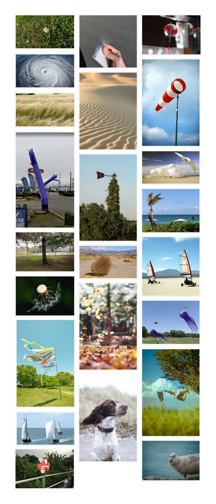
Mood board of wind phenomena used to pick the core metaphor.
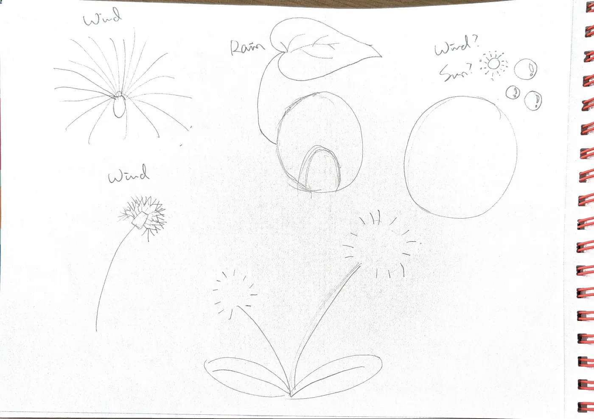
Workbook sketches exploring dandelion forms.
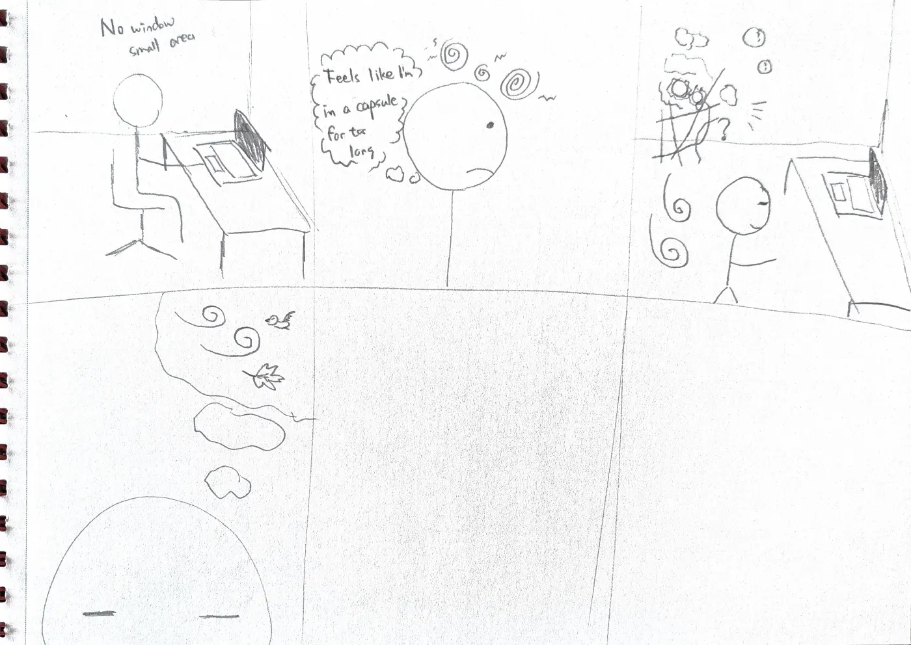
Early scenario sketch: who is in the room, and where they can reach.
Key Decisions
A dandelion, not a windmill
ConsideredWindmill, falling leaves, wind chime
WhyThe dandelion was the only image that passed all seven criteria.
A windmill reads as machinery, and a chime adds noise to a space that is already loud.
Bubbles as the "seeds"
ConsideredRibbons with a fan, sound, flipping pads
WhyBubbles are light and short-lived like seeds, they drift with real
airflow, and they bring back childhood play. TradeoffThey leave
residue, need refilling and make some noise, so I made the medium a swappable module: a ribbon
and fan can replace it where bubbles aren't acceptable.
Gestures with no wrong answer
WhyPeople in waiting rooms shouldn't have to learn commands. Three
modes need almost no effort: wave sideways and the light rotates while bubbles follow your hand;
wave upward for rising "starlight"; simply walk past and a trail of light follows you. Watching
without interacting is still rewarding.
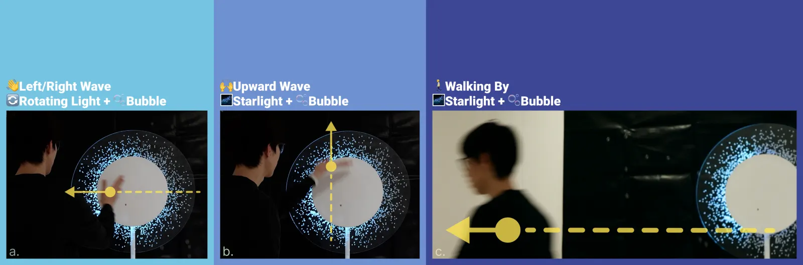
The three interaction modes: sideways wave, upward wave and walking past.
The Hardest Part: A Ring That Feels Weightless
The dandelion head had to look light and fluffy, but it also had to be buildable, waterproof and
sturdy. The answer came from somewhere I didn't expect, a transparent exit sign. Its
letters glow out of a clear acrylic panel that's lit from the edge. I did the same thing: laser-engrave
dots into clear acrylic and light it from the side, so the dots glow and the rest of the panel stays
see-through.
For the dot pattern I adapted a Python generator (based on work by Sonya Vasquez). I could tweak the dot
density, shape and size and have a new ring laser-cut the same afternoon. That paid off later when
participants asked for a lighter, less dense pattern.
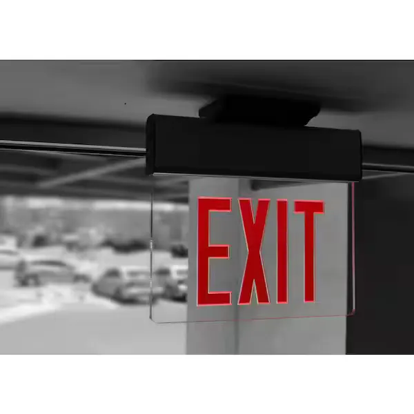
Inspiration: an edge-lit exit sign. Image: NICOR via Home Depot.
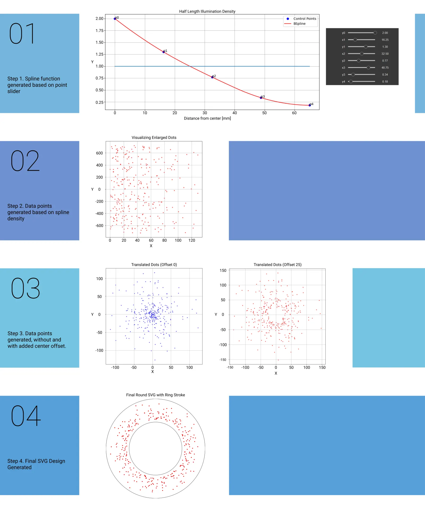
How the generator builds a ring, step by step.
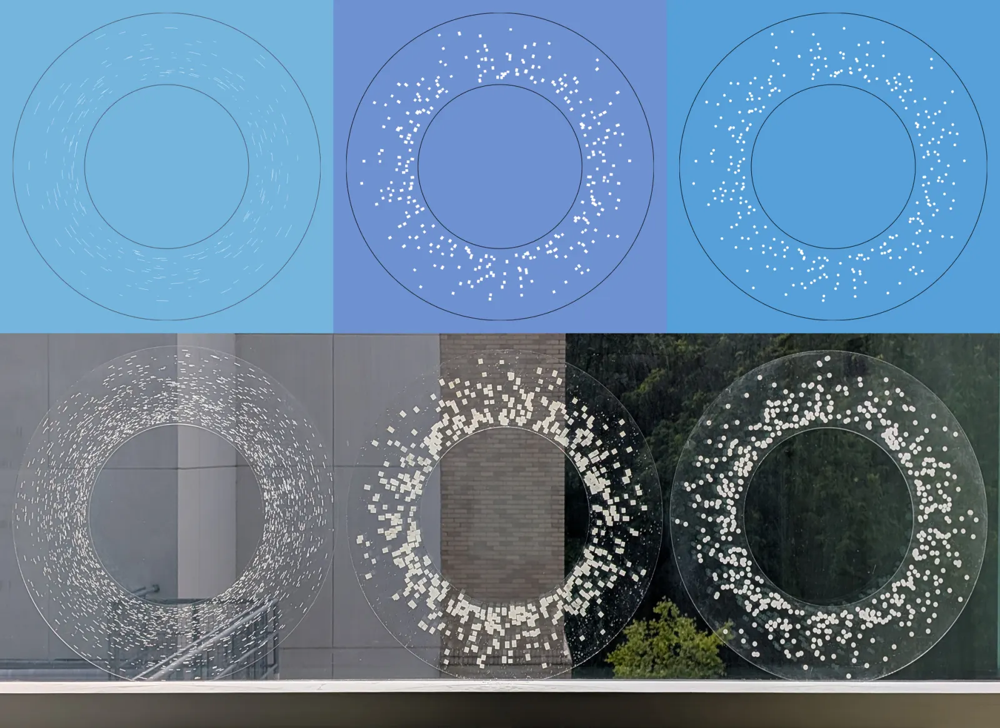
Three pattern iterations: generated (top) and engraved (bottom).
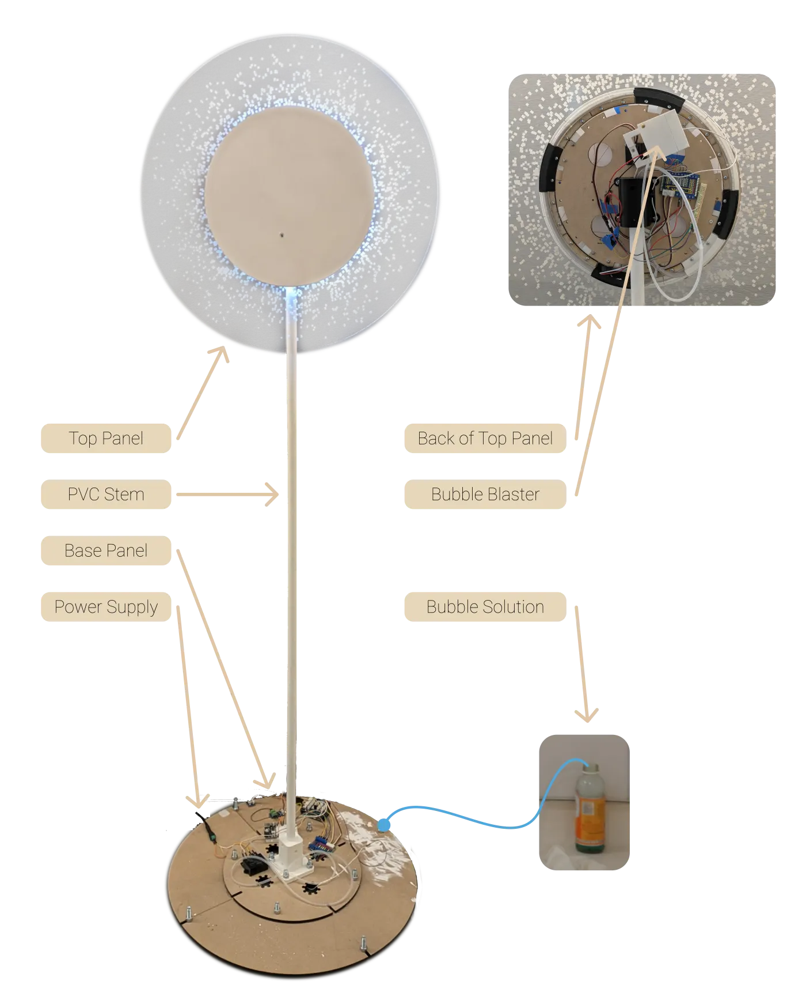
Four swappable modules: visualization, ephemeral medium (bubbles), sensing and structure.
What People Said
I recruited 30 people on Prolific to watch a demo video and rate it with a modified Robotic Social
Attributes Scale. Then I ran in-person sessions with the working prototype myself, with 3
participants.
>50%preferred Windborne over a nature video on all four
dimensions we compared
4.1 / 5for visual design; 3.8 as a conversation starter; 3.6
for curiosity
In person, people said they felt "happy", "peaceful" and "relaxed". One called it "romantic" and said it
reminded them of a "playful childhood". People were confused for a few seconds at first, and then
that turned into a "desire to play around".
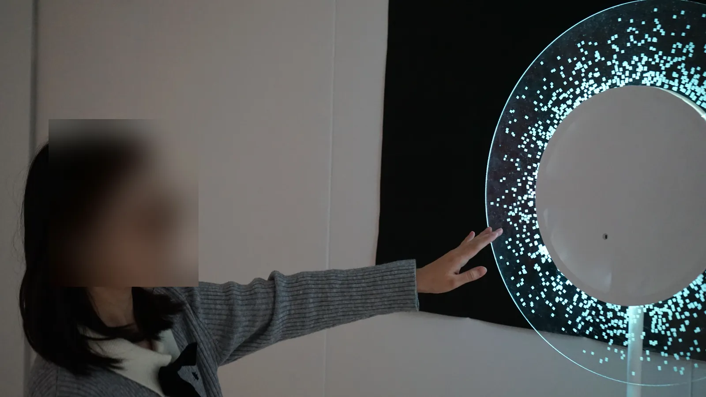
An in-person session. The participant's face is blurred.
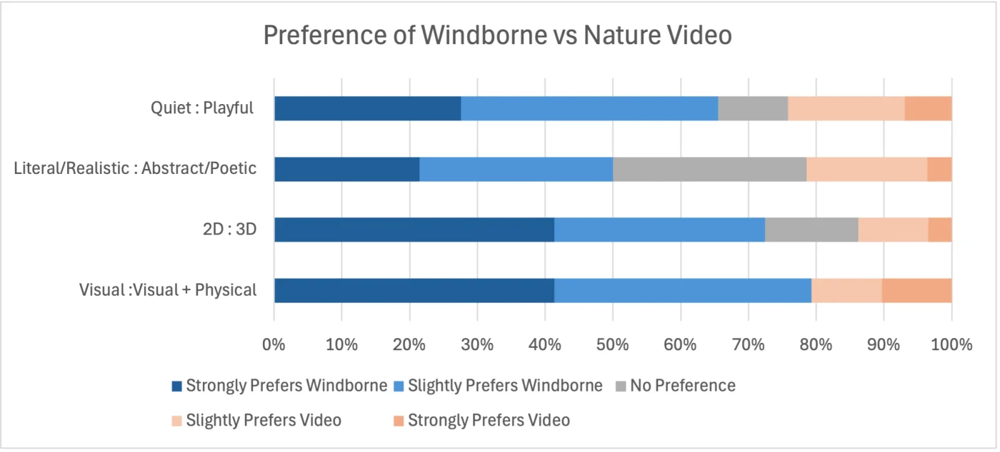
Preference for Windborne vs. a nature video (n=30).
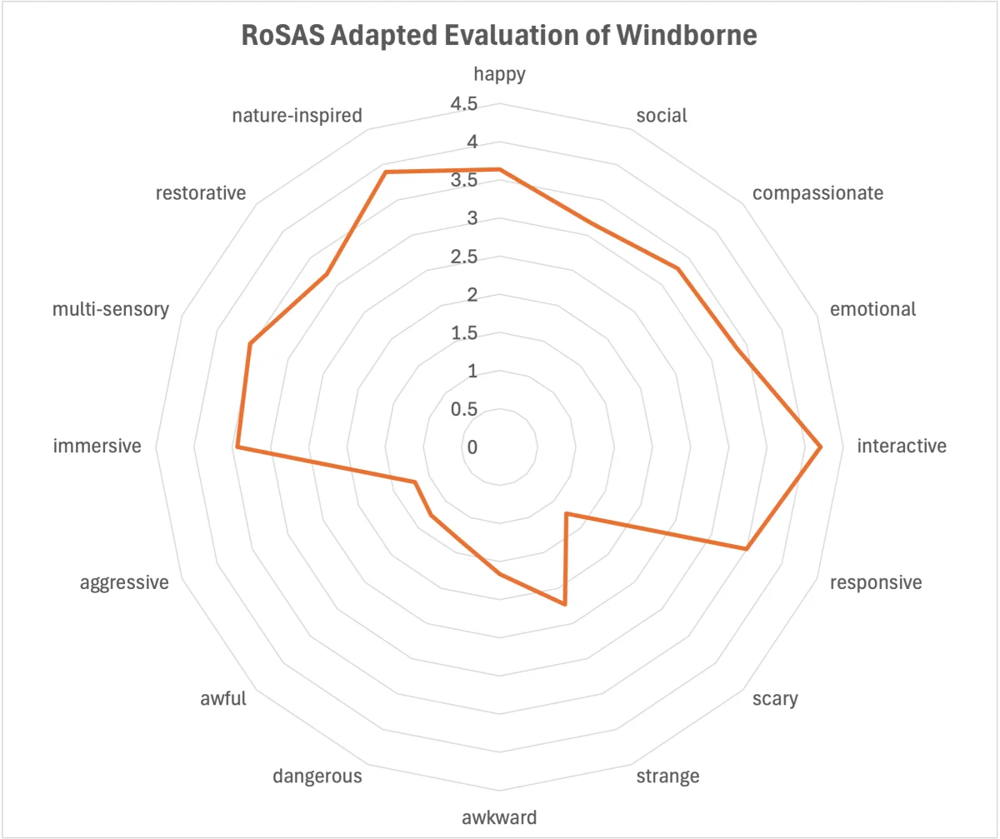
Perceived attributes (modified RoSAS): warm and interactive, not threatening.
Reflection
What worked
A high-fidelity, beautiful prototype made people's reactions genuine instead of just polite.
It also shows the care a designer can put in for the people it's made for.
What I'd change
The survey was based on a video, and I haven't tested with patients or clinicians yet. Next
I want to test it inside a hospital and try mediums other than bubbles.
Open question
One participant said the light was evocative but "lacked the physical feeling" of real wind. How
could the installation make you feel air move without becoming a fan?
Publication
Windborne: Fostering Nature Connection and Playfulness through Multimodal Interaction in Healthcare
Settings
Borui Wang & Keith Evan Green · ICMI '26 Demo, Napoli, Italy